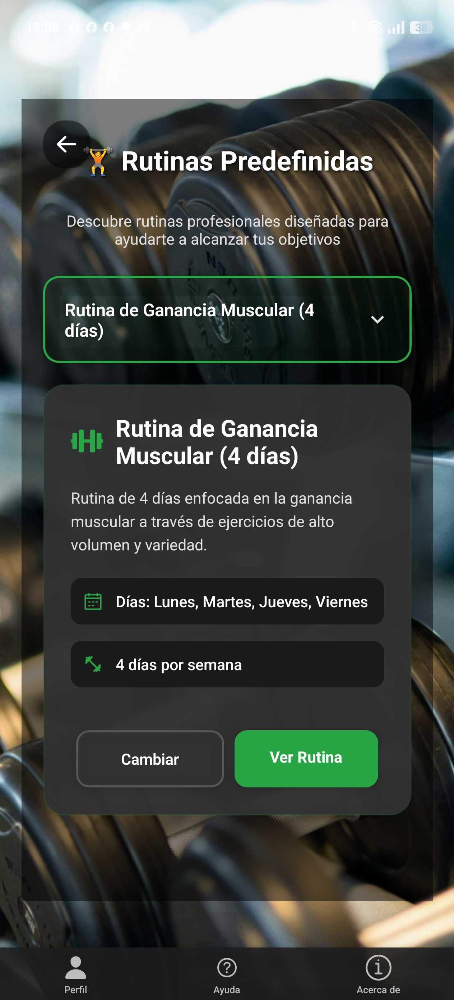
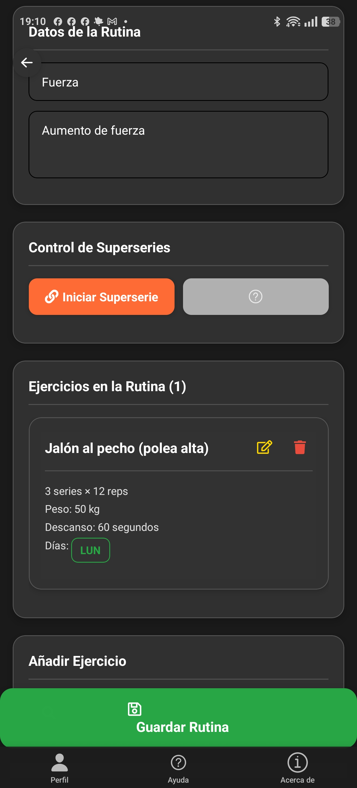
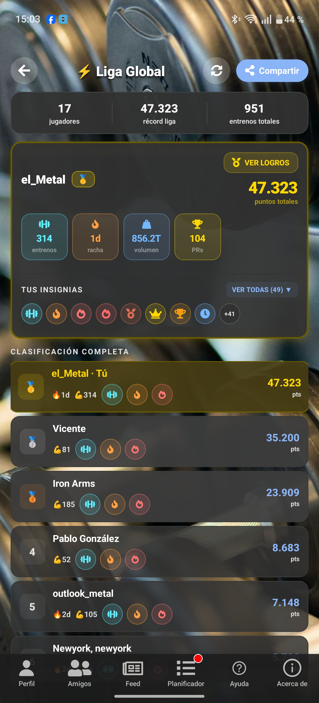
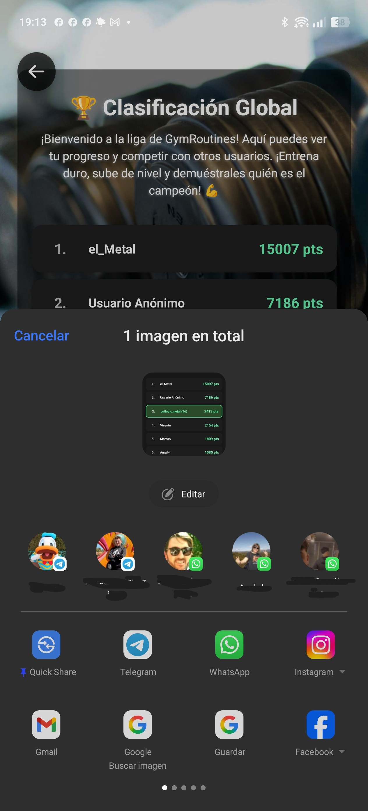

¡Bienvenido al Centro de Ayuda de Gym Routines! Aquí encontrarás una pequeña explicación de la app. ¡Espero que te guste!
En esta pantalla podrás seleccionar la rutina que te interese y guardarla directamente en tu perfil de usuario para usarla cuando quieras, una vez en tu perfil, también podrás editarla para adaptarla a tus necesidades. • Desde tu perfil, accede a "Rutinas Predefinidas" • Una vez en la pantalla selecciona la rutina que te interese ver. • Si te gusta la rutina y la quieres usar, simplemente pulsa el botón, la rutina se abrirá en modo Gym para hacerla y se guardará automáticamente en tu perfil. • También puedes guardarla directamente sin abrirla para usarla cuando quieras.

Rutinas predefinidas listas para usar.
Personaliza tus entrenamientos como un profesional y con facilidad: 1. Ve a la pestaña "Crear Nueva Rutina". 2. Asigna un nombre y una descripción a tu rutina. 3. Pulsa "Añadir Ejercicio" Escribe y selecciona los ejercicios de la lista. 4. Para cada ejercicio, especifica el día, las series, repeticiones y peso. 5. En los ejercicios aeróbicos (correr, cinta, elíptica, etc...) igualmente selecciona los datos (km y tiempo). 6. Elige todos los ejercicios en tu plan semanal, configúralo como quieras. 7. Guarda tu rutina para que aparezca en "Mis Rutinas" y puedas usarla.

Pantalla de creación de rutinas donde añades día, ejercicios, peso, repeticiones y series.
Compite y ve tu progreso frente a otros usuarios: 1. Navega a la pestaña "Clasificación". 2. Verás una lista de usuarios ordenada por su puntuación total. 3. Tu posición se resaltará (si aplica). 4. ¡Entrena más duro para subir de puesto!

La tabla de clasificación muestra los usuarios mejor puntuados.
Celebra tus logros compartiendo tu perfil o tu puesto en la liga con quien quieras: 1. Desde tu pantalla de "Perfil" o "Clasificación", busca el botón "Compartir". 2. Se generará una imagen con tu información y un mensaje predefinido. 3. Selecciona la aplicación por la que deseas compartir (WhatsApp, Instagram, etc.). 4. ¡Inspira a tus amigos con tu dedicación!

Botón de compartir para mostrar tus avances.